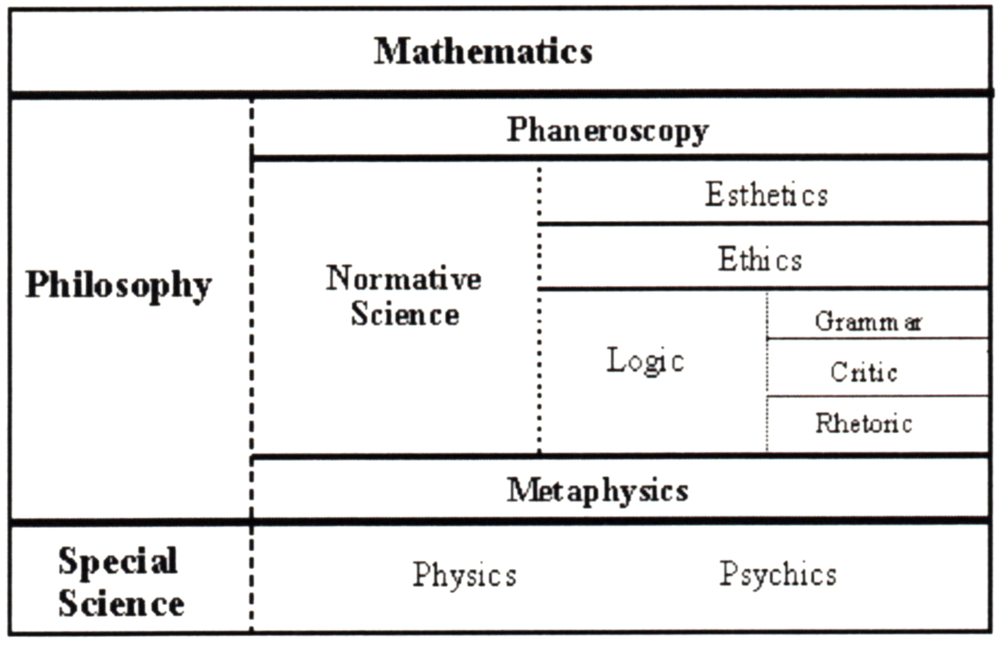

10 Concepciones metodológicas -ergo teóricas- sobre el razonamiento abductivo y el Pensamiento de Diseño (Design Thinking); la abducción recargada
Pensamiento de Diseño, conocimiento de diseño, razonamiento abductivo, pragmatismo
Introducción
En 1965, el diseñador y metodólogo, Bruce Archer, utilizó el concepto de "Pensamiento de Diseño" (Design Thinking), quizás por primera vez, para referirse a la forma en que los diseñadores tratan los problemas de diseño y, en su artículo, refiriéndose a la complejidad de los problemas tecnológicos, escribió:
[…] ha habido un cambio mundial en la énfasis de lo escultórico a lo tecnológico. Se han encontrado maneras de incorporar el conocimiento de la ergonomía, la cibernética, el marketing y la ciencia de la gestión en el pensamiento de diseño. Al igual que con la mayoría de las tecnologías, ha habido una tendencia hacia la adopción de un enfoque de sistemas distinto del de artefactos." (Cross 1984, 57-58)
Años después, el diseñador y teórico John Christopher Jones, también utiliza el término Design Thinking en su artículo The state-of-the-art in design methods Broadbent y Ward (1969):
[…] el objetivo subyacente es abrir el diseño para que otras personas puedan ver lo que está sucediendo y contribuyan con información y reflexiones que están fuera del conocimiento y la experiencia del diseñador. Habiendo visto que el objetivo común de los nuevos métodos es externalizar el pensamiento del diseño, podemos preguntarnos por qué, en este período de la historia, tantas personas han intentado lograrlo. Seguramente la respuesta es que hay una insatisfacción mundial con los métodos tradicionales de diseño. El alto coste de los errores de diseño, especialmente en el caso de los sistemas complejos, es un fuerte incentivo para la externalización del pensamiento de diseño1 porque sólo de esta manera ese pensamiento puede ser sometido a crítica y prueba antes de que se cometan errores costosos. (Broadbent y Ward 1969, 193)
Más tarde Jones, en su libro Design methods: seeds of human futures (1970), elabora la idea de Pensamiento de Diseño de manera sistemática en los capítulos 4, 5 y 6 de la primera parte del libro. Años después, en 1979, en su artículo Designing Designing (Design Studies, 1, vol. 1, 31-35), incluye el Pensamiento de Diseño (racional e intuitivo, como lo describe) como una de sus diez principales “preocupaciones” sobre el diseño.
La noción de Pensamiento de Diseño tiene una larga historia, como un aspecto central del proceso de diseño, y los académicos, o teóricos de la disciplina, lo comprendían, incluso antes que el arquitecto e investigador neozelandés Peter Rowe publicara su libro Design Thinking en 1987, donde recoge y organiza las reflexiones sobre los métodos del diseño, presentando el Pensamiento de Diseño como una herramienta metodológica propia del proceso del proyecto de diseño.
Estas reflexiones metodológicas habían sido recogidas en 19622, donde J. Ch. Jones define los métodos de diseño como “un medio para resolver el conflicto que existe entre el análisis lógico y el pensamiento creativo”. (Jones y Thornley 1963, 54). En la siguiente Conferencia va a definirse el proceso de diseño como un “sistema abierto de decisiones” (Gregory 1966, 83), donde el uso de herramientas metodológicas / teóricas sería ineludible.
En principio, las visiones y las concepciones teóricas sobre el proceso de diseño plantearon preguntas fundamentales sobre un proceso que es al mismo tiempo creativo y racional (no predeterminado), donde un aspecto esencial es la toma de decisiones.
El arquitecto y matemático inglés March (1976) podría ser el primero (hasta ahora no se encuentra evidencia en contra), entre muchos autores, hasta hoy, en descubrir y difundir las conexiones entre la abducción (producción, como él la denomina en el contexto del proceso del proyecto) y el diseño.
El objetivo de este trabajo es ir más allá de la utilidad lógica de la abducción, con el fin de abordar aspectos epistemológicos que contribuyen a la reflexión teórica del diseño.
Reflexiones sobre el pragmatismo y el pensamiento del diseño
Cualquier análisis del pensamiento de Peirce, debe tener en cuenta que él es un lógico, y es desde la lógica que va a abordar preguntas filosóficas, psicológicas y metafísicas. El núcleo de la visión de Peirce es la idea de que existen unas categorías universales en las que las ciencias teóricas (o ciencias de investigación) están organizadas, en una dependencia jerárquica.
Su filosofía es enteramente sistemática, y es descrita por la investigadora Sara Barrena de la siguiente manera:
En lo más alto se encuentran las matemáticas, a las que pertenecen las categorías. Después de las matemáticas viene la filosofía, que tiene tres ramas principales: fenomenología, ciencias normativas y metafísica, cada una en dependencia de la anterior. Las ciencias normativas son tres a su vez: estética, ética y lógica (o semiótica), derivándose cada una de la anterior, asociadas a tres tipos de bienes (estético, ético y lógico) y que se corresponden con las tres categorías. La tarea de la metafísica sería ‘estudiar los rasgos más generales de la realidad y los objetos reales’. La lógica, […] proporcionaría la estructura para las investigaciones metafísicas, llenas de divisiones triádicas como posibilidad, actualidad, destino; azar, ley, hábito; mente, materia, evolución. Charles S. Peirce (1996)
La Figura 1 muestra un mapa Peirceano sobre Ciencias Teóricas, o Ciencias de la Investigación:

En este esquema aparecen los procesos lógicos supeditándose a la faneroscopía, o fenomenología Peirceana, donde el “fanerón” (acuñado por Peirce), corresponde a “la totalidad colectiva de todo aquello que de alguna manera o en algún sentido se presenta en la mente, con total independencia de si corresponde o no a algo real” (Peirce, CP 1.284 [1905]; cf. SS 189 [1905])
Esta concepción tiene directa conexión con las aproximaciones de la disciplina de diseño a la realidad, donde, desde la experiencia sensible, debe interpretar, a través de un proceso de observación y síntesis.
Fenomenología Peirceana o Faneroscopía
El objetivo del estudio de la faneroscopía es establecer los aspectos más generales de la experiencia posible, donde el aspecto más importante es que existen tres (y sólo tres) categorías irreductibles de la experiencia, llamadas Primeridad o sensación, Secundidad o relación y Terceridad o interpretación.
Primeridad: Aquello que es independientemente de cualquier otra cosa, es decir, es una realidad monádica que prescinde de relaciones. La primeridad se asocia con variedad, indeterminación, actualidad, y presente inmediato.
Secundidad: Aquello que es relativo a algo, es decir, se refiere a cualquier interacción que envuelve dos elementos. La secundidad tiene que ver con el concepto de experiencia, ya que la experiencia está moldeada por el mundo, del mismo modo que nosotros lo estamos. Se asocia a ideas de causalidad, determinación, y el pasado. También puede ser entendido como oposición y resistencia.
Terceridad: es la categoría de relaciones triádicas –aquello que tiene la virtud de mediar entre otras dos cosas– con el potencial de establecer conexiones, también entre aquellos elementos pertenecientes a distintos universos (mediación). La terceridad es dominante en las ideas acerca de signo, hábito, significado, entendimiento, desarrollo racional, y el futuro. La terceridad está asociada a un propósito inteligible. Es conceptual, a diferencia de las otras dos categorías (primeridad y segundidad).
La concepción triádica es más eficiente que una diádica del tipo [primero-segundo], [agente-paciente], [sí-no], ya que lo tercero es lo que sirve como un puente entre los otros dos, y los relaciona.
Estas categorías están claramente presentes en la Teoría de Signos de Peirce, donde afirma:
“Un signo, o representamen, es algo que está por algo para alguien en algún aspecto o capacidad.” (CP 2.227-229, 1897)
Signo (representamen, el primero)
Objeto (el segundo)
Interpretación (el tercero)
Sobre los estados de la mente: duda - creencia - hábito - acción
El objeto de razonar es averiguar algo que no conocemos a partir de lo que ya conocemos. Consecuentemente, razonar es bueno si es tal que da lugar a una conclusión verdadera a partir de premisas verdaderas, y no a otra cosa. La cuestión de la validez es así algo puramente de hecho y no de pensamiento. (CP 5.365)
Así, la razón humana se mueve, según Peirce, desde un “estado de duda” hacia un “estado de creencia,” donde “La irritación de la duda causa una lucha por alcanzar un estado de creencia. Llamaré a esta lucha indagación” (ibid)
La duda es lo que inicia un proceso necesario y espontáneo: la investigación.
En la reflexión de Peirce, el pensamiento necesita alcanzar permanentemente un estado de creencia. Peirce habla de “estado de creencia” y no de “conocimiento”, porque la creencia no implica necesariamente conocimiento. El conocimiento se puede obtener luego de un proceso de razonamiento.
La sorpresa, el factor que rompe el hábito
Peirce sugiere que para romper un hábito, no sólo debe existir una duda auténtica, sino que debe generarse sorpresa:
“Porque la creencia, mientras dura, es un hábito fuerte, y como tal, obliga al hombre a creer hasta que alguna sorpresa rompe el hábito. La ruptura de una creencia sólo puede deberse a alguna experiencia novedosa”. (CP 5.524, 1905)
La verdadera duda siempre tiene un origen externo, por lo general de sorpresa, y que es tan imposible para un hombre crear en sí mismo una verdadera duda por un acto de la voluntad que bastaría para imaginar la condición de un teorema matemático, como sería para él darse una auténtica sorpresa por un simple acto de voluntad. (CP 5.443, 1905)
La sorpresa sería, en última instancia, la detonante de cualquier investigación. Sería, ni más ni menos que la detonadora del razonamiento, y según Peirce éste es el razonamiento abductivo.
Para llevar a cabo ese análisis, es necesario revisar otro aspecto del sistema Peirceano.
El Musement, la experiencia de la que surge la abducción
En la epistemología Peirciana, los universos de la experiencia, los estados de la mente y los modelos de razonamiento forman un sistema armónico, interdependiente, dinámico y continuo. Por lo tanto, todos los aspectos mencionados interactúan en el proceso de razonamiento sintético.
El estado inicial de la mente, necesario para la sorpresa y la explosión del proceso de pensamiento que impulsa la acción, es, en palabras de Peirce, el Musement.
[…]sube al bote del Musement, empújalo en el lago del pensamiento, y deja que la brisa del cielo empuje tu navegación. Con tus ojos abiertos, despierta a lo que está a tu alrededor o dentro de ti, y entabla conversación contigo mismo; para eso es toda meditación" (CP 6.461, 1908)
El tipo de razonamiento abductivo fluye de la experiencia del Musement (reflexión, meditación), y forma la experiencia de la cual surge la abducción.
El Musement es un dejar libre a la mente, que vaya de una cosa a otra y podría tomar distintas formas:
[…] puede tomar la forma de contemplación estética, o bien la de construir distantes castillos […], o la de considerar alguna maravilla en uno de los Universos, o alguna conexión entre dos de los tres, con la especulación acerca de su causa (ibid)
Peirce no promueve el Musement como un método de análisis lógico, sino más bien como un estado mental del cual pueden surgir, y van surgiendo, sugerencias y conjeturas, algunas de las cuales pueden ser creíbles. Lo que no implica que no se realice un análisis a posteriori.
Abducción, Pragmatismo y Diseño
Peirce propone el concepto de abducción (una forma de inferencia cuyo resultado agrega nuevas ideas al conocimiento) como una herramienta metodológica para la investigación científica:
La abducción es el proceso de formar una hipótesis explicativa. Es la única operación lógica que introduce alguna idea nueva; pues la inducción no hace más que determinar un valor, y la deducción desarrolla meramente las consecuencias necesarias de una pura hipótesis. (CP 5.171, 1903)
Cualquier investigación comienza con la observación de fenómenos, que luego se ponderan para hacer una conjetura, la que podría ser una posible explicación. Esa hipótesis, indispensable para iniciar la investigación, puede ser refutada durante el camino hacia su confirmación, pero sirve al propósito de iniciar un proceso. Sin ella, el proceso no sería posible.
Es decir, a través del proceso de razonamiento abductivo, solo se llega a una conclusión probable, pero que el investigador considerará momentáneamente aceptable. Es este carácter intuitivo del razonamiento abductivo, y no la probabilidad real de la conclusión, es lo que le da validez.
Para Peirce, los tres tipos de razonamiento (deducción, inducción e hipótesis) son tres etapas en el método de la investigación lógica, donde la hipótesis, ahora llamada abducción, es realmente la primera etapa.
La abducción es el proceso de formar una hipótesis explicativa y su forma silogística evoluciona a la siguiente forma lógica:
Se observa el hecho sorprendente \(C\);
Pero si \(A\) fuera verdad, \(C\) sería una cuestión normal.
Por lo tanto, hay razones para sospechar que \(A\) es verdad.
La hipótesis se da cuando encontramos alguna circunstancia muy curiosa, que se explicaría por la suposición de que fuera un caso de cierta regla general, y en consecuencia adoptamos esa suposición. O, cuando constatamos que en ciertos aspectos dos objetos guardan una marcada semejanza, e inferimos que se asemejan entre sí notablemente en otros aspectos. (CP 2.619-644, 1878)
El razonamiento abductivo es un tipo de razonamiento sintético, que une dos aspectos: una posible explicación y la sugerencia de una hipótesis a demostrar. Entonces, la noción de abducción está íntimamente ligada al pragmatismo, que es, en definitiva, la lógica de las hipótesis, o lógica abductiva, cuyo principio es la máxima pragmática:
“Consideremos qué efectos, que puedan tener concebiblemente repercusiones prácticas, concebimos que tiene el objeto de nuestra concepción. Nuestra concepción de estos efectos es pues el todo de nuestra concepción del objeto.” (CP 5.388-410, 1878)
El pragmatismo es esencialmente una teoría del significado, una filosofía del conocimiento, donde “saber” es “hacer”. En última instancia, desde la perspectiva pragmática, el conocimiento se origina en la interacción con el mundo, considerando al hombre como un ser activo que intenta comprender el mundo.
Rasgos que caracterizan al pragmatismo3
Actitud naturalista: El fenómeno del conocimiento es un acontecimiento del reino de la naturaleza. El sujeto del conocimiento no es un “yo pensante” sino un ser natural y social que está inmerso activamente en la realidad que investiga.
Primacía de la práctica: El marco general para una teoría pragmaticista del conocimiento es la actividad de los sujetos, esto es, su modo de relación con la realidad, donde el conocimiento es una estrategia, hecha de operaciones psicofísicas (sentir, entender, recordar, manipular, medir…) y simbólicas (comparar, generalizar, descomponer, inferir…), encaminada a la acción y coordinada con sus fines.
Según esto, la acción es concebida como:
Condición previa para el conocimiento
Medio para alcanzar el conocimiento
Resultado de la obtención de determinado conocimiento
Así, el método, el alcance y la justificación del conocimiento obedecen a los siguientes principios:
Empirismo: Las “repercusiones prácticas” son efectos experimentables y, por tanto, relevantes para la acción del sujeto en algún contexto práctico imaginable. Esta es la Función Prospectiva del conocimiento (anticipación de la experiencia posible con vistas a la acción).
Fallibilismo: Tanto la creencia como la duda son estados suscitados por una determinada relación del individuo con su entorno, relación cuya índole es primariamente práctica y no abstracta o intelectual. Puesto que las “repercusiones prácticas” que especifican el “significado de una concepción” o concepto son potencialmente indefinidas, la verificación racional de nuestras creencias es siempre provisional y está abierta a ulterior investigación.
Anti-fundamentalismo: El conocimiento no puede reconstruirse lógicamente en la forma de una secuencia de inferencias a partir de unas primeras verdades incuestionables. La noción fundamentalista, está asociada a algún tipo de garantía metafísica en relación con el conocimiento, es decir, ignora la dinámica real de las creencias y los fines de su formación y su evaluación por parte del sujeto.
Inmanentismo: La noción de verdad (problema epistemológico central del pragmatismo), sea o no alcanzable, sólo tiene sentido como un tipo de creencia, es inmanente (o interna) al plano de las prácticas cognoscitivas. La verdad de una creencia no puede ser independiente de su valor como guía eficaz de las acciones y, por tanto, de su utilidad en términos de deseos y necesidades de los sujetos.
Algunas implicaciones del pragmatismo de Peirce con respecto al diseño
La revisión del sistema conceptual Peirceano, particularmente el pragmatismo, abre un interesante campo de reflexión sobre los aspectos esenciales que caracterizan (no determinan) la actividad de diseño.
Diseñar es establecer un “nuevo orden” a partir de “lo que es” hacia “lo que debe ser”, donde este “nuevo orden” se expresa o materializa en un artefacto o sistema (físico o virtual).
En este proceso de cambio y toma de decisiones están involucrados (y dosificados) componentes racionales e intuitivos.
Las tres categorías o dimensiones de la experiencia (percepción, relación y conceptualización) surgen de la acción (o interacción) con la realidad, y, por lo tanto, derivan de su significado. Sólo desde el significado es posible establecer un “nuevo orden”, cambiar el mundo, es decir, diseñar.
De acuerdo con esto, y como primeras conclusiones, aquí hay algunas preguntas y respuestas:
¿Cómo obtiene el diseñador el conocimiento?
El pragmatismo, como teoría del conocimiento, sitúa al diseñador frente a la complejidad, variedad y extensión del mundo, donde establecerá un “nuevo orden”, en una posición activa y abierta para interactuar con la realidad, desde donde construirá creencias, imaginará nuevas realidades e instilará nuevos significados.
En este sentido, el musement, como estado mental y actitud frente a esta realidad que pretende investigar (y cambiar), describe un estado receptivo y sensible que fomenta el descubrimiento en el diseñador, primero desde su intuición, que es válido como instrumento para movilizar la investigación.
¿Qué preguntas se hace a sí mismo y cómo encuentra las respuestas?
Las preguntas surgen naturalmente de la duda y activan la generación de una hipótesis. El razonamiento por hipótesis (abducción), un aspecto clave del pragmatismo, es una herramienta metodológica (investigativa) y epistemológica (reflexiva) eficiente. Las preguntas que un diseñador debe hacerse frente a un encargo concreto contienen y expresan la hipótesis que pone en marcha el proceso de diseño, y que, paso a paso, permite alcanzar creencias para tomar decisiones y concretar en un artefacto o sistema (proyecto).
Las respuestas, en cualquier caso, nunca serán definitivas. Cualquier respuesta, materializada en una decisión de diseño puede ser reconsiderada por una nueva hipótesis y, por lo tanto, generar nuevas respuestas. Este falibilismo del proceso muestra los infinitos caminos posibles en el proceso de diseño.
¿Qué tipo de conocimiento es el conocimiento de diseño?
El conocimiento de diseño será el que sirva a los fines del proyecto y tiene una estrecha relación con las preguntas y respuestas anteriores. La reflexión de este artículo es parte del conocimiento de (y para) el diseño y tiene que ver con una “conciencia” permanente del proceso y sus aplicaciones.
De esta manera también, el diseñador, en su objetivo permanente de mejorar e innovar, se pone en una nueva y necesaria interacción (relación) con los artefactos que crea, para que, a partir de esta experiencia, puedan sugerir nuevas posibles funciones y experiencias, planificadas por el diseño y posteriormente percibidas (o esperadas) por el usuario.
En última instancia, el pragmatismo (sus concepciones y lógicas) hace posible lidiar con los componentes racionales e intuitivos del proceso de investigación, y ofrecer caminos de descubrimiento cuyo valor reside en la interacción del investigador, o diseñador, con el mundo. Desde aquí, pueden surgir nuevas maneras de abordar no solo el proceso de diseño, sino que, un arco más amplio: el Pensamiento de Diseño, la Investigación de Diseño y la Educación de Diseño.
Esta es una indagación aún en curso.
Referencias
En el texto original, en inglés se lee “design thinking”. Las negritas son de esta investigadora.↩︎
La primera conferencia sobre métodos de diseño es organizada por J. Christopher Jones y Peter Slann en el Department of Aeronautics, Imperial College, London, 19-21 de septiembre de 1962 (Jones y Thornley 1963).↩︎
Extraído de (Velarde Lombraña y Muñoz Veiga 2000, 462-63)↩︎
Esta página es distribuida por la Universidad de Navarra y el GEP https://www.unav.es/gep/